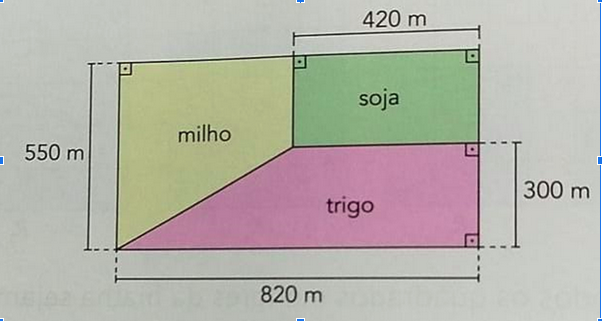
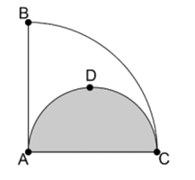

Um agricultor familiar iniciou um processo de remanejamento com o objetivo de aumentar a produtividade,
diminuir os custos e evitar que uma quantidade maior de área seja devastada. Nele, a área destinada ao plantio deve ser subdividida conforme
o esquema a seguir.

Essa área está representada por 2 trapézios retângulos e 1 retângulo, compondo uma região retangular de dimensões 820 m x 550 m.
Se o plantio de soja ocupa 10,5 hectares, a área destinada ao plantio de milho, em hectares, mede:
Na figura ao lado temos um quarto de circunferência ABC e uma
semicircunferência ADC. Sendo X e Y as medidas das áreas branca e cinza, respectivamente, podemos afirmar que:

tome AC como 2 metros
Sabendo que pagamos cerca de 22% de imposto sobre produtos de
supermercado. Quanto se pagaria de imposto sobre uma compra de
R$950,00?
A prefeitura de uma cidade anuncia que, no ano de 2017, recapeou 60% das avenidas da cidade e
se compromete a recapear, em 2018, 80% das avenidas restantes. De 2017 para 2018, a
quantidade de avenidas dessa cidade não se alterou. Sendo assim, em 2018, do total de avenidas
da cidade, a prefeitura deverá recapear